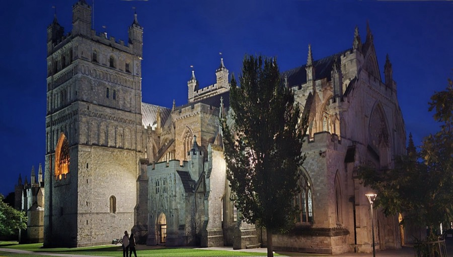
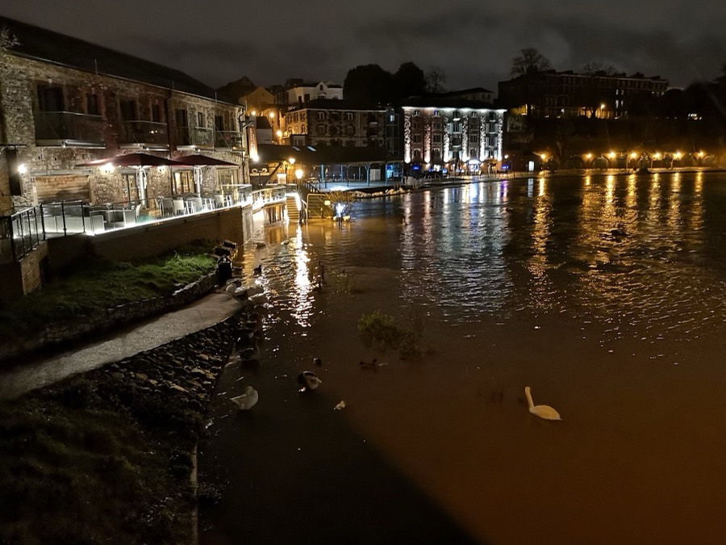

First In Exeter
Ticket-drop alerts for Exeter's big student nights. Face value. Before they sell out.
TP Wednesday sells out.
Be first in.
One message the moment tickets go on sale. Tap through, pay face value, done.
How it
works
-
01
Join the free channel.
It's a public Telegram channel and it costs nothing. Alerts land about 10 minutes after tickets drop.
-
02
Turn notifications on.
A muted alert is just another message. Let it buzz.
-
03
Want them instantly?
Start 2 weeks free. Instant alerts the second tickets drop. After the trial, £2.99 a month. Card required. Cancel any time.


Exeter 50° 43′ 06″ N 3° 32′ 02″ W
Two ways in
Same alerts, two speeds. The free channel is about 10 minutes behind. Instant isn't.
-
Free
Public channel
Free channel
£0
- Alerts about 10 minutes after the drop
- Exeter's big student nights
- No card. No catch.
-
2 weeks free
Via our Telegram bot
Instant alerts
£2.99/ month
- Alerts the second tickets drop
- 14 days free, then £2.99 a month
- Card required. Cancel any time.
Both run on Telegram, so you'll need the app. You won't be charged during the trial, we'll message you before it ends, and you can cancel from the bot at any time.